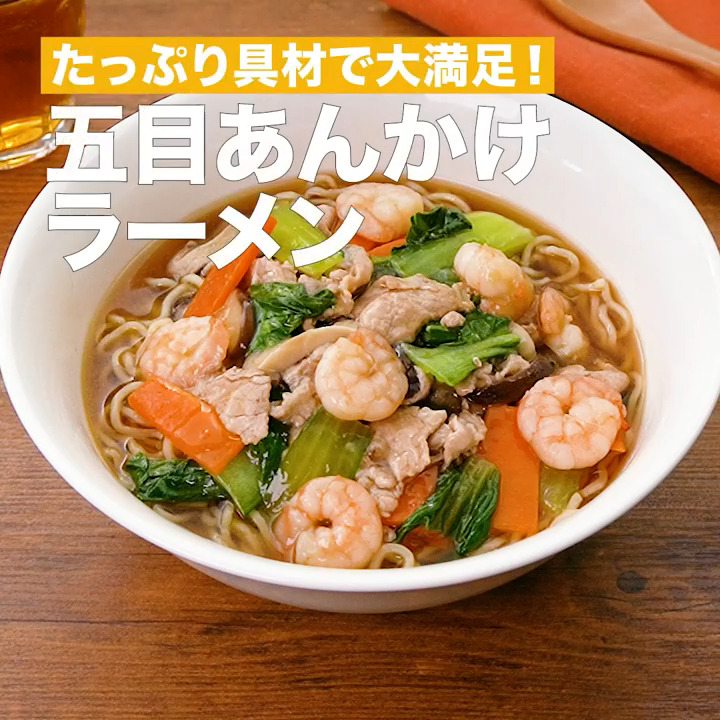

ラーメい

Description
材料
- 中華麺[生] 2玉
- 豚こま切れ肉 80g
- むきえび 120g
- チンゲン菜 1株(100g)
- にんじん 1/4本(40g)
- しいたけ 2個
- ごま油 大さじ1
- 酒 大さじ1
- しょうゆ 小さじ1
- オイスターソース 小さじ1
- 鶏ガラスープの素 小さじ1/3
- 水 150cc
- 片栗粉 大さじ1
- 水 大さじ1
- 水 400cc
- しょうゆ 大さじ1と1/2
- 鶏ガラスープの素 小さじ1/2
手順
- チンゲン菜は茎と葉に分ける。茎は縦半分に切り、切り口を下にして3等分に切る。葉の部分は食べやすい大きさに切る。にんじんは縦3等分に切って切り口を下にし、薄切りにする(短冊切り)。しいたけは軸を切り落とし、薄切りにする。
- むきえびは水気をふきとる。
- フライパンにごま油を入れて中火で熱し、豚肉を入れて肉の色が変わるまで炒める。むきえび、チンゲン菜の茎、にんじん、しいたけを加え、むきえびの色が変わるまで炒める。☆を加えて混ぜ、煮立ったらふたをして弱火で3分ほど煮る。チンゲン菜の葉を加えて混ぜ、水溶き片栗粉をまわし入れてとろみがつくまで混ぜる(五目あん)。
- 鍋に湯をわかし、中華麺を入れて袋の表示時間通りにゆで、水気を切る。
- 別の鍋に★を入れて中火で熱し、煮立たせる(スープ)。
- 器にスープ、中華麺を入れる。3の五目あんをかける。
References